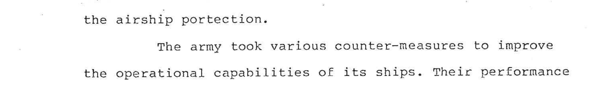
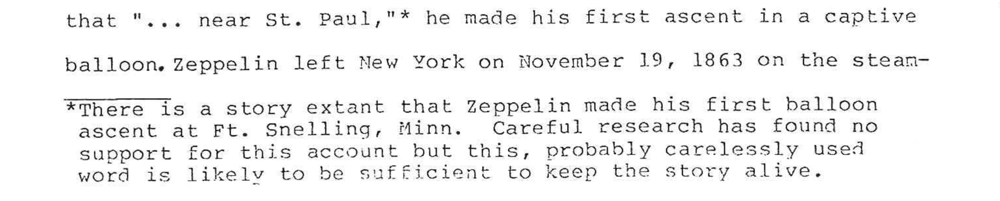

The archive
How this text was made
The scan has no text layer. It is a photograph of paper, so every word in this edition was recovered from pixels. The hard part was not reading the characters — a good engine manages about 95% on this typescript — but recovering the structure: where paragraphs begin, which text is a footnote, which is a quotation, and which marks on the page are not text at all.
Almost all of that came from geometry. The machine reading gives a bounding box and a confidence score for every word, and the typewriter’s own habits do the rest.
| What was measured | What it identifies |
|---|---|
| Line begins at the left margin | body text continuing |
| Line begins 150–280 px in | the first line of a new paragraph |
| Indented, and the block is narrower than the body | a quotation |
| Lines about 100 px apart | double-spaced body text |
| Lines about 50 px apart | a single-spaced footnote or quotation |
| A solid horizontal run of dark pixels, low on the page | the footnote separator rule |
| Centred, short, near the top of a page | a chapter heading |
Two things that look obvious and are not
The paragraph indent is not a constant. It ranges from about 150 px to 276 px depending on which revision typed the page, so no fixed threshold can separate a paragraph opening from a quotation. What does separate them is width: a quoted block is narrower than the body measure. Below, a normal paragraph on scan page 60 indents further than most quotations do.

And line spacing does not identify footnotes, because block quotations and verse are single-spaced too. The reliable marker is the separator rule, found by scanning the pixels directly rather than by asking the text recogniser about it. That rule was detected on 30 pages. It is also short — about an inch, not the full measure — and it sits so close to the first note line that their bounding boxes overlap, which is why splitting strictly below it leaked footnotes into the body.

One linguistic rule turned out to matter as much as any of the geometric ones: a new paragraph can only follow a completed sentence. On faint pages the machine sometimes captures only the right-hand part of a line, so its left edge looks like an indent; that test rejects the false paragraph breaks this produces.
Read the workings
Corrections
All 254 changes, grouped by kind of error, with the page each was made on and a crop where one settled the question.
What was left alone
“occured”, “socalled”, “mililtary”, “43 degress F.” — the author’s, not the scanner’s, and why that distinction was drawn where it was.
Verification
A coverage test run backwards from the source, to catch text that disappeared without leaving a mark in the output. It found three real bugs.
Statistics
Source, machine reading, reconstructed structure and finished document, in figures.
Evidence
The page images that settled a specific question, each tied to the decision it supports.
Reproducing it
The full working archive — the pipeline scripts, the two
hand-built input files, the reconstructed manuscript as JSON, and every
evidence crop — sits alongside this site. Two files are the human
input to the whole process: overrides.json, the pages retyped
by hand, and fixes.json, the verified corrections. Everything
else regenerates from the scan.